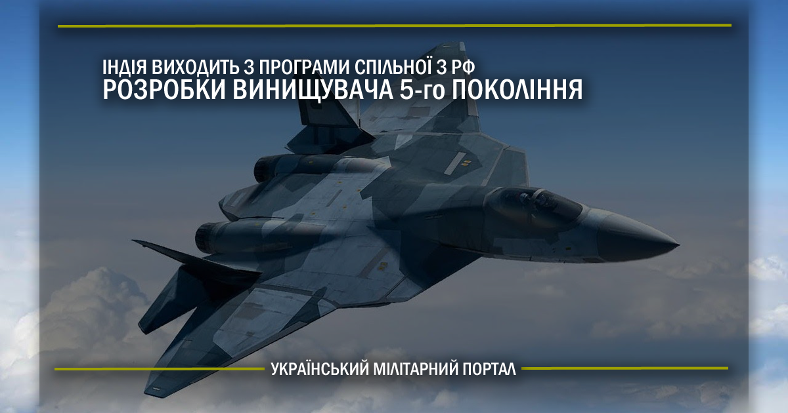

Су-57 (ПАК ФА, Т-50, Виріб 701, винищувач 21; кодове ім'я НАТО: «Felon») — російський винищувач, розроблюваний ОАК. Головним розробником є ВАТ Сухой, де він отримав позначення Т-50. На КнААВО, де збирають перші льотні екземпляри, називався виробом 701. Перший політ літак здійснив 29 січня 2010 року.
Терміни серійних постачань літака в російські війська неодноразово змінювались: вони були заплановані на 2015, 2016, пізніше — на 2017 рік і 2018 рік. Зрештою 25 грудня 2020 року ВКС РФ отримали перший серійний винищувач.
Літак розробляють для заміни МіГ-29 і Су-27 в російських ВПС. Первісно у проєкті мала брати співучасть Індія. Однак у квітні 2018 Індія відмовилась від участі у спільному з Росією проєкті FGFA. Індійські військові прийшли до висновку, що обіцяний російський «винищувач 5-го покоління», не відповідає заявленим вимогам скритності, авіоніці, РЛС та інше.
Історія створення
Проєкти радянського періоду
Наприкінці 1980-х років ВПС Радянського Союзу виробили вимоги до винищувача п'ятого покоління для фронтової авіації на заміну МіГ-29 і Су-27. На основі цих вимог, РЛК «МіГ» розробив проєкт Мікоян 1.44, а КБ «Сухой» — Су-47. Розпад Радянського Союзу і наступний за ним економічний спад не дозволили продовжити роботу над створенням літака, проєкт МіГ 1.44 був пізніше закритий через припинення фінансування, а Су-47 став використовуватися як летюча лабораторія. У 2002 році КБ «Сухой» було вибрано для розробки нового літака, на якому будуть використані деякі технології Су-47 і МіГ 1.44.
Су-57 зі своїми предками Су-47 та МіГ 1.44
На основі напрацювань, отриманих при створенні Су-57, КБ «Сухой» вирішила розробити однодвигунний малопомітний винищувач. Цей літак повинен мати злітну вагу до 18 тонн та максимальну швидкість у 2 Маха, бути надманевровим завдяки двигуну з керуванням вектора тяги та тягоозброєність не менше «одиниці». Тобто, літак стане аналогом F-35.
Хід робіт над комплексом
У 2002 році почалися роботи за проєктом. У 2004 році Путіну продемонстрували макет літака, у 2005 році — розпочато фінансування розробки.
У грудні 2007 року генеральний директор компанії «Сухой» Михайло Погосян повідомив, що випробування нового літака були заплановані на 2009 рік, а серійне виробництво мало бути налагоджено до 2015 року.
26 грудня 2008 року головнокомандувач ВПС Росії генерал-полковник Олександр Зелін повідомив, що до 12 серпня 2009 року Росія отримає льотний зразок літака п'ятого покоління і в цьому ж році він підніметься у повітря. «Робота над літаком йде за планом, всі завдання виконуються. У наступному році ми повинні отримати перші три машини. Нині всі вони перебувають у стані збирання, у тій чи іншій мірі готовності», — зазначив Зелін. За заявами головнокомандувача ВПС, до 11 серпня 2009 року зібрано три літаки. За його словами, всі вони проходили наземні випробування, політ першого льотного екземпляра спочатку був запланований на листопад 2009 року, а згодом — на грудень 2009 року.
Просте креслення Су-57
Льотні випробування російського винищувача п'ятого покоління, за заявою віцепрем'єра РФ Сергія Іванова, мали розпочатися «наприкінці грудня 2009 — на початку січня 2010 року», наприкінці 2009 року літак справді робив пробіжки по аеродрому, однак початок льотних випробувань було перенесено на січень 2010 року. Зовнішній вигляд літака тримали в секреті до моменту офіційного пресрелізу ДКБ Сухого про перший політ літака, що породжувало безліч чуток і спекуляцій. Забезпечення такого високого рівня секретності в епоху масового розповсюдження електронної фототехніки експерти називають значним досягненням російських спецслужб.
23 грудня 2009 року почалися випробування льотного екземпляра ПАК ФА — літак виконав рулежку і пробіжки на аеродромі «Дзьомгі» в Комсомольську-на-Амурі. У січні 2010 року льотний екземпляр зробив ще декілька пробіжок.
25 травня 2010 року член Громадської палати (ОП) РФ Йосип Діскін на пресконференції в Москві за підсумками поїздки членів ВП в Бразилію і Аргентину повідомив журналістам, що Бразилія розглядала можливість участі у спільному з Росією проєкті зі створення бойового літака п'ятого покоління.
Новий літак 5-го покоління оснащений принципово новим комплексом авіоніки з функцією «електронного пілота».
У червні 2018 року стало відомо про укладання контракту на постачання 12-ти Су-57. Перші літаки за цим контрактом мали бути готові у 2019 році та передані до ВКС Росії.
Льотні випробування
29 січня 2010 року перший льотний екземпляр ПАК ФА вперше піднявся в повітря, зробивши політ тривалістю близько 45 хвилин. Другий політ, в Комсомольську-на-Амурі, знову був виконаний 12 лютого 2010 року. Третій політ відбувся 15 лютого 2010 року в Комсомольську-на-Амурі й також був успішно завершений.
Випробувальні польоти були припинені до середини березня у зв'язку з доробками авіоніки, після чого буде виконано ще 4 випробувальних польотів, потім винищувач буде відправлений у ЛДІ імені Громова в Жуковський. Голова компанії «Сухой» Михайло Погосян відзначив, що вже в ході перших польотів були перевірені кути крену і досягнуто кута атаки у 27° — при випробуваннях літака Су-27 таких результатів вдавалося добиватися тільки через кілька місяців після того, коли машина вперше піднялася в повітря.
Станом на 6 квітня 2010 року ПАК ФА виконав шість випробувальних польотів, всі вони визнані успішними. Як заявляють в військово-промисловому комплексі, серйозних доопрацювань літак не вимагає.
Випробування Су-57
30 жовтня 2022 року здійснив свій перший політ модернізований винищувач Су-57 «Другого етапу», який тривав 56 хвилин. На літаку випробовують комплекс бортового обладнання із розширеним функціоналом, інтелектуальною підтримкою екіпажу та можливістю застосування широкої номенклатури нових типів озброєння.
Експортна модифікація
Спочатку передбачалося, що Т-50 — це буде російський варіант літака, а ПАК ФА — російсько-індійський варіант. Після того, як ДКБ «Сухий» виграло тендер на розробку літака, керівництво компанії, через високу вартість проєкту, у 2000 році звернулося до індійців, з якими раніше укладали договори на постачання Су-30МКІ. Голова «Сухого» Михайло Погосян під час обіду в Москві з офіцером індійських ВПС довірливо повідомив, що: «завершено розробку винищувача нового покоління, який стане таким же передовим, як американський F-22 Raptor».
На думку українських фахівців, економіка Росії була зруйнована, але «Сухий» створюватиме новий високотехнологічний винищувач, якщо Індія стане партнером, здійснивши витрати на розробку літака в стінах Комсомольського-на-Амурі авіаційного виробничого об'єднання (КнААПО).
Для ознайомлення з проєктом в ДКБ «Сухого» приїжджали, зокрема головком ВПС, міністр оборони, і навіть президент Індії. Літак їм сподобався, але від участі в роботі над ним вони чемно відмовилися, обґрунтувавши це тим, що їм потрібен винищувач п'ятого покоління не з двома двигунами, що робить «Сухий», а легкий, з одним двигуном. Виходячи з цього передбачалося, що Індія розраховувала придбати у США готовий винищувач п'ятого покоління F-22 Raptor (у нього теж два двигуни) чи початкові передсерійні випробування F-35 (JSF), у якого один двигун. Але переговори пройшли безрезультатно, після чого індійці погодилися взяти участь у проєкті.
17 жовтня 2007 року підписали міжурядову угоду про спільну розробку винищувача п'ятого покоління. На першому етапі проєкту участь індійської сторони повинно було бути чисто фінансовим, а первісна вартість робіт оцінювали в 10 млрд доларів. Потім індійські фахівці повинні будуть за участю російських колег доопрацювати машину під власні потреби.
22 грудня 2008 року ОАК та індійська компанія Hindustan Aeronautics Limited (HAL) підписали контракт про спільну розробку та виробництво винищувачів п'ятого покоління. За умовами досягнутої угоди, індійська компанія займеться розробкою бортового комп'ютера винищувача, навігаційної системи, інформаційних дисплеїв у кабіні пілота і системи самозахисту. Решта робіт у спільному проєкті візьме на себе російська компанія «Сухой».
Наприкінці 2009 року індійській делегації продемонстрували зразок літака, від якого, за висловом одного з членів делегації (про це на початку січня написала індійська газета «Business Standard»), «ефект був як від удару струмом».
31 серпня 2010 року в підмосковному Жуковському, на аеродромі «Раменське», в межах процесу з підготовки контракту між Об'єднаною авіабудівною корпорацією (ОАК) і корпорацією HAL про спільну розробку винищувача п'ятого покоління відбулася демонстрація нового російського перспективного авіаційного комплексу фронтової авіації (ПАК ФА) представникам Міністерства оборони та Повітряних сил Індії, а також індійської літакобудівної корпорації HAL. Передбачалося, що частка HAL у спільному проєкті складе не менше 25 відсотків. Загальну вартість проєкту оцінювали у 8—10 млрд доларів. Передбачали, що індійську версію винищувача згодом постачатимуть на експорт.

У жовті 2017 року у доповіді командування Повітряних сил Індії йшлося, що літак, який створюється на базі російського винищувача п'ятого покоління Су-57, не має достатнього рівня непомітності. Також, він не припускає модульної концепції двигуна, що призводить до подорожчання технічного обслуговування винищувача, вважають військові. Відповідно, на підставі цього вони запропонували владі своєї країни вийти зі спільної російсько-індійської програми FGFA (Fifth Generation Fighter Aircraft).
У квітні 2018 року стало відомо, що Індія призупиняє участь у спільній з РФ програмі FGFA на основі російського проєкту Су-57. Причиною є те, що винищувач Су-57 не відповідає їхнім вимогам до перспективного літака, зокрема йде мова про малопомітність, авіоніку, РЛС тощо.
2 січня 2022 року в ЗМІ з'явилася інформація що індійська сторона відмовляється від російських Су-57 та Су-75.